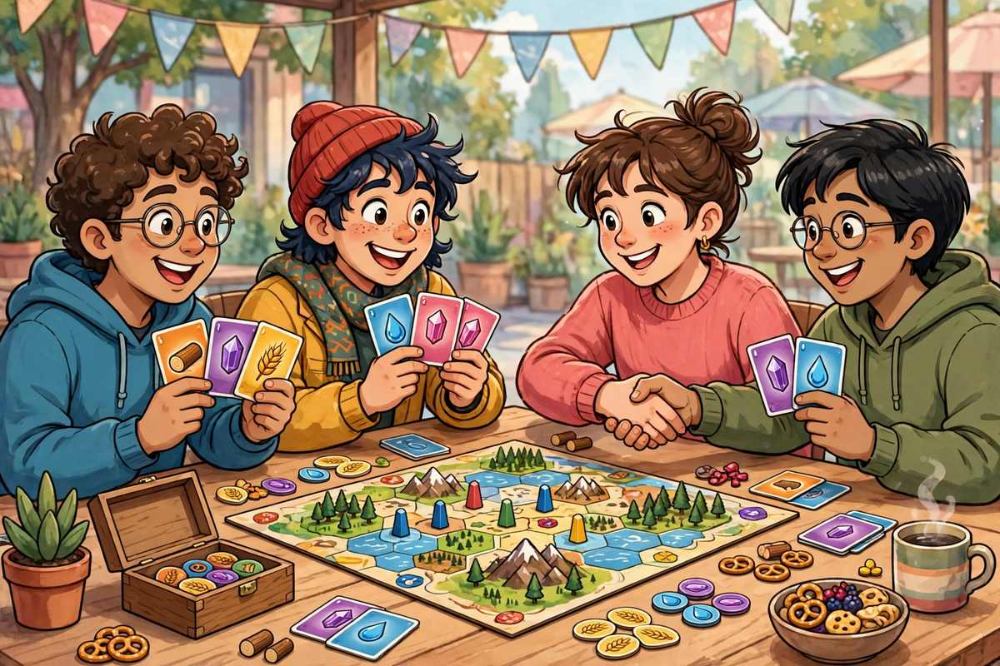

Negotiation games, explained

What actually makes a board game a negotiation game, rather than a strategy game with some talking in it? Start with the verified anchors. Catan, designed by Klaus Teuber and first published in 1995, plays 3 to 4 people in 1 to 2 hours, and its trading sits inside a race to typically 10 victory points. Bohnanza, designed by Uwe Rosenberg and released in 1997 by Amigo Spiele and in English by Rio Grande Games, plays 2 to 7 people in 30 to 60 minutes, and trading is not a side activity there. Trading is the engine. The difference between those two shapes, and the rules about whether a promise binds, is the whole subject.
Reference definitions agree on the core. Trading in board games means players voluntarily swap resources, cards, or other assets through direct negotiation, usually to resolve a shortage or pursue a goal the board alone will not grant. Negotiation games go further: talking, proposing, and reading other players become the main route to winning, not a break between turns.
Start with the comparison: what kind of deal is it?
| Deal type | How it works | Named example | Feel at the table |
|---|---|---|---|
| Bank or fixed rate trade | Swap with the game itself at a printed rate, no person to persuade | The non player trade option inside many resource games | Predictable, quiet, a pressure valve when no player will deal |
| Peer to peer resource trading | Players propose swaps directly, value set by need at that moment | Catan | Lively, public, every deal also sends information |
| Open card trading with a forced hand problem | Cards must be played in drawn order and cannot be rearranged, so unwanted cards create constant trade pressure | Bohnanza | Fast, funny, deals can include future promises |
| Alliance negotiation with breakable promises | Secret plans and simultaneous orders mean support promised may not arrive | Diplomacy | Intense, personal, trust is the real currency |
Promise rules matter as much as trade type. In many trading games, the swap itself is instant and binding because the pieces change hands at once, while any promise about a future turn is only as strong as table custom. In Diplomacy, described in negotiation guides as a seven player game with secret, simultaneous orders and no dice, no cards, and no luck, the promise is the move. Support that was negotiated and then withheld decides the board, which is why that game carries a reputation the lighter titles never will.
Why value moves: scarcity, timing and the leader problem
A resource has no fixed worth in a negotiation game. Worth comes from scarcity, timing, and the buyer's alternatives. A card that is clutter to one hand can be the missing piece in another, and the same card is worth more on the turn it completes a build than it was two rounds earlier. Good negotiation games protect that uncertainty: hidden hands, differing needs, and more than two players all stop a trade from having one obviously correct price.
Multiple parties change everything. A two player trade is close to zero sum, and reference guides note that trading rarely functions well with only two players, because any deal that helps the opponent directly hurts the trader's relative position. With three or more players, a deal can help both traders while hurting a third player who is not at the table for that bargain, and that triangle is where negotiation games come alive.
The leader problem follows. Helping the player who is about to win is rarely wise, even when the offered price looks generous in isolation. Experienced tables therefore price the standings into every offer: the same swap can be a fine deal with a trailing player and a mistake with the leader. New players who learn only that rule improve faster than players who memorise exchange rates.
Two spec verified trading games: Catan and Bohnanza
Specs verified against reference listings for this guide, November 16, 2026:
| Spec | Catan | Bohnanza |
|---|---|---|
| Designer / publisher / year | Klaus Teuber / Kosmos, first published in Germany / 1995 | Uwe Rosenberg / Amigo Spiele, English by Rio Grande Games / 1997 |
| Players | 3 to 4, or 5 to 6 with extensions | 2 to 7 in the Rio Grande edition, original for 3 to 5 |
| Playing time | 1 to 2 hours | 30 to 60 minutes |
| Why trading happens | Settlements produce uneven resources, so players trade to build roads, settlements, and cities toward typically 10 victory points | Hand order cannot be rearranged, so players must trade away beans they cannot use and collect beans they can plant |
Notice the teaching difference. Catan teaches negotiation inside a larger building race, so a shy trader can still play, just less efficiently. Bohnanza gives nobody that shelter: a player who will not trade keeps drawing cards that must be dealt with in order, and the fields fill with the wrong beans. Groups choosing a first negotiation game are really choosing how much silence the game will tolerate.
Making an offer, step by step
A trading turn suits a procedure, and new players negotiate better with one than with abstract advice about confidence:
1. Name the need, not the whole hand. Say what is wanted and what is offered in return, in one clear sentence, so the table can respond to a real proposal.
2. Invite counters before accepting the first reply. In a game with three or more players, a short pause lets other players compete, and competition is what reveals a fair price.
3. Check the standings before closing. Ask whether this deal hands the leader the final piece of a win. If it does, raise the price or walk away.
4. Close out loud and swap at once where the game allows it. A spoken, completed swap prevents the most common table dispute, two players remembering different deals.
Success check: both players can repeat the exact swap back, the pieces have actually changed hands, and neither player has just traded the leader into a win by accident. If any part fails, the deal is not done yet.
Pick by player count and promise rule
Three checks close the purchase. Player count first: buy negotiation games for groups of three or more, and treat two player trading as a variant experience, not the main event. Promise rule second: groups that hate hard feelings should pick instant, binding swaps and avoid alliance games where betrayal is the mechanism. Talk tolerance third: a group that prefers quiet puzzles will not become loud for one box, so pick a game like Catan, where trading supports a building game, before a pure trading game like Bohnanza.
Readers who enjoy the social reading in these games, without the trading, may also like social deduction games, where talk itself is the contest.
— Rex Bennett, Entertainment Writer